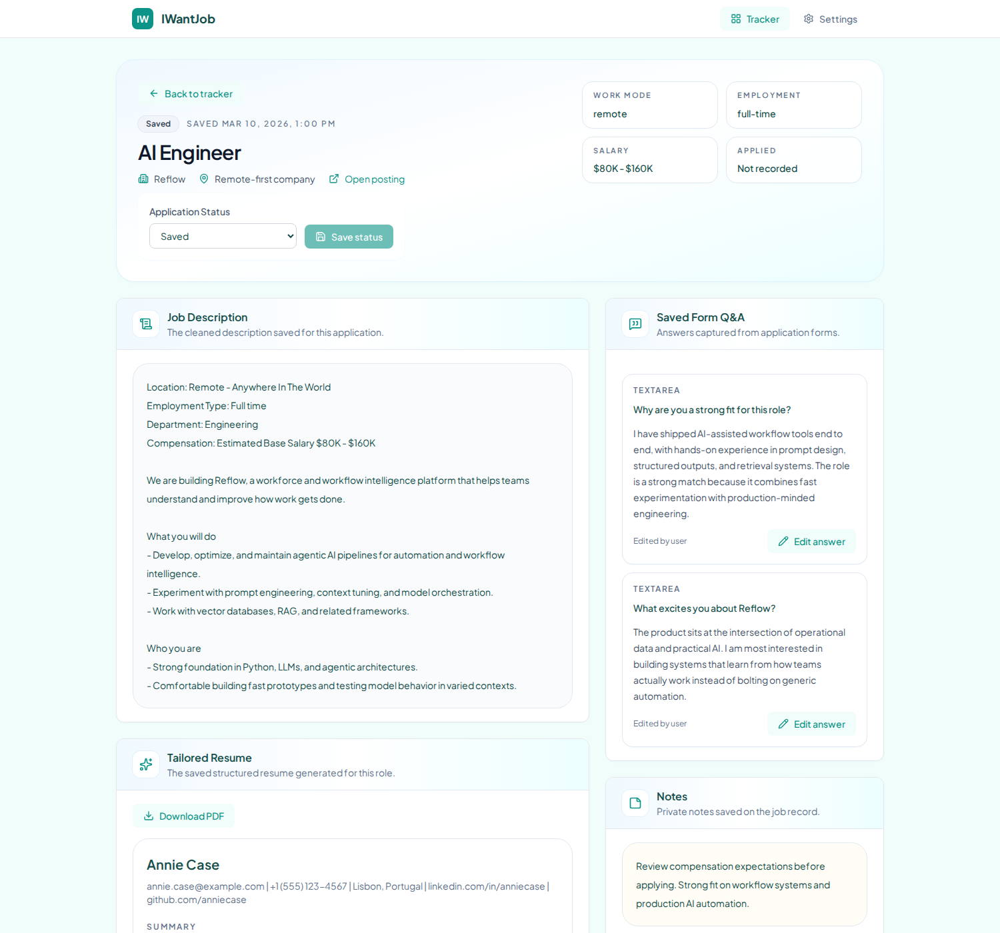
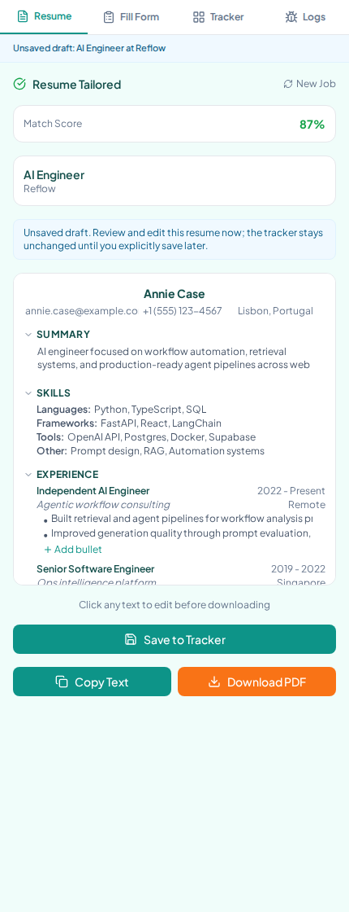
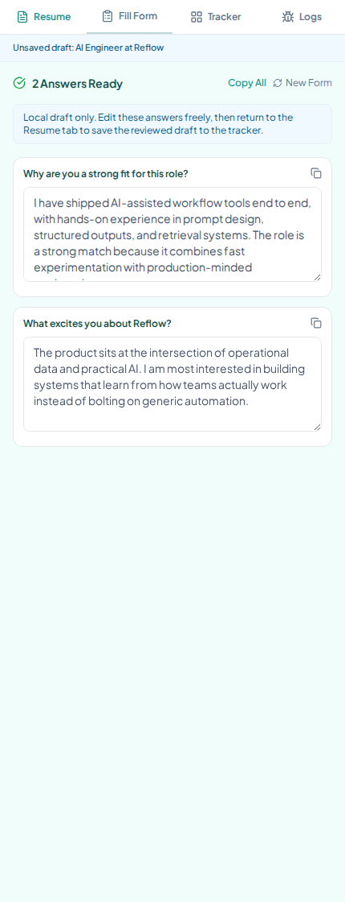

Tailor your resume to every role, generate smart form answers, autofill applications, and track everything in one place. Bring your own AI key or let us handle it.

Works with the AI providers you already use
Four steps from job listing to tracked application. No shortcuts on quality — you review everything before it saves.
Open any job posting and click Extract. The extension reads the full job description automatically.
AI generates a role-specific resume with match score. Edit inline, download as PDF when ready.
AI reads application fields and generates answers. Review, edit, then autofill directly into the page.
Save approved applications to your tracker. Review JDs, resumes, and Q&A from a full detail workspace.
Not another resume builder. A complete application workflow — from job discovery to tracked submission.
Generates a role-specific resume from your base resume and the extracted JD. Includes a match score, structured JSON preview, and one-click PDF download.

No telemetry, no analytics, no logging of your content. Self-hosted with your own Supabase database. API keys stay in your browser.
AI reads form fields and generates context-aware answers. Handles text, select, radio, checkbox, and even iframe-hosted forms. You review before autofill.
After you review and approve answers, autofill writes them directly into the live application form. Every field gets a status report: filled, skipped, or needs manual review.

Add optional persona details — career goals, communication style, strengths — so AI answers feel authentically yours, not generic.
Full-width tracker with search, filter, sort, inline status editing, and a detail workspace per application. See your JD, resume, and Q&A in one place.
OpenAI, Anthropic, Gemini, DeepSeek, or local Ollama. Per-feature model selection so you can use GPT-4o for resumes and a cheaper model for forms.
Inspect every line of code. Self-host the backend. Own your data completely. No vendor lock-in, no hidden APIs, no surprises.
Real screenshots from the current product. What you see is what you get.
Resume draft in the sidepanel — review and edit inline before continuing
Generated form answers — edit, autofill, then save when you approve
Start free with the open-source version. Upgrade to Pro when you want zero-setup convenience.
Self-hosted, full control
Managed, zero-setup
docker compose up, creating a free Supabase project, and loading the extension in Chrome. The README walks through every step. If that feels like too much, the Pro plan will handle all of it for you.
Join hundreds of job seekers who let AI handle the tedious parts so they can focus on landing the right role.